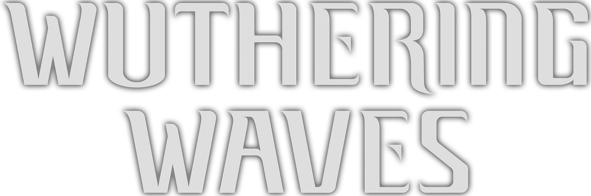
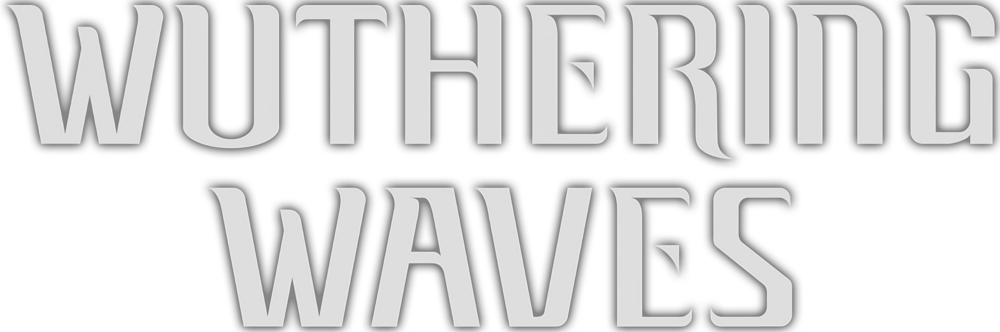

Dynamic Combat System
Master fluid combat mechanics with seamless dodging, parrying, and combo attacks. Each Resonator offers unique abilities and playstyles for diverse tactical approaches.
Open World Exploration
Traverse vast landscapes filled with secrets, resources, and challenges. Use parkour abilities to scale cliffs, glide through valleys, and discover hidden locations.
Resonators & Elements
Collect powerful Resonators with elemental abilities. Build your team strategically to exploit enemy weaknesses and create devastating elemental reactions.
Engaging Story
Unravel the mysteries of the Lament through compelling narrative quests. Meet memorable characters and make choices that shape your journey.
Cooperative Gameplay
Team up with friends to tackle challenging dungeons and world bosses. Coordinate strategies and combine your Resonators' abilities for victory.
Regular Updates
Experience new content with regular patches featuring new Resonators, story chapters, events, and gameplay improvements.
The World of Solaris-3
In the aftermath of the Lament, humanity struggles to survive in a world transformed by mysterious phenomena. As a Rover awakening with no memory, you possess unique abilities to resonate with the frequencies of this new world.
The Lament brought devastation, but also created Tacet Discords—dangerous entities born from chaotic frequencies. Only Resonators, individuals who can manipulate these frequencies, stand between humanity and total extinction.
Join the struggle to protect the remaining bastions of civilization, uncover the truth behind the Lament, and discover your role in shaping the future of Solaris-3.

 
